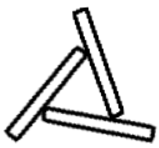

Is it possible to arrange 6 long round pencils so that each of them touches all the other ones?
Three pencils are placed as shown in the picture.

Three more, stacked similarly, but "twisted" in the opposite direction, are placed on top of them.